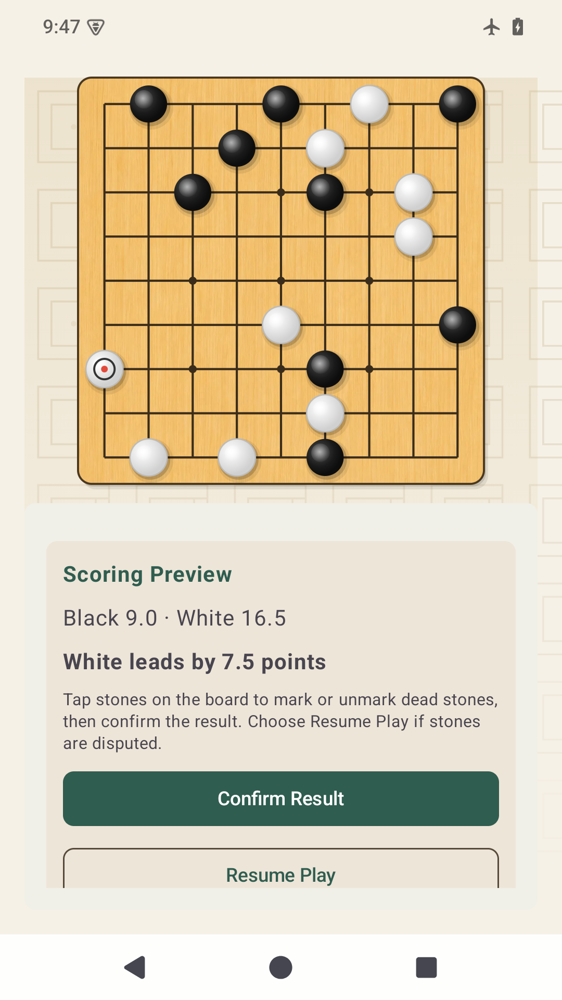
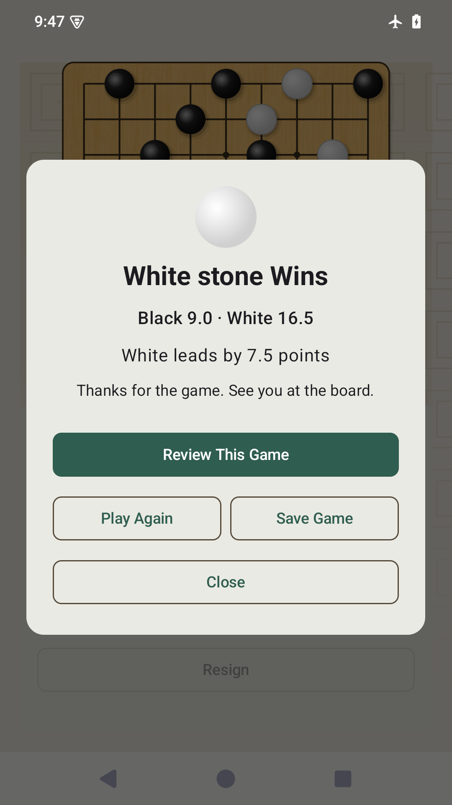
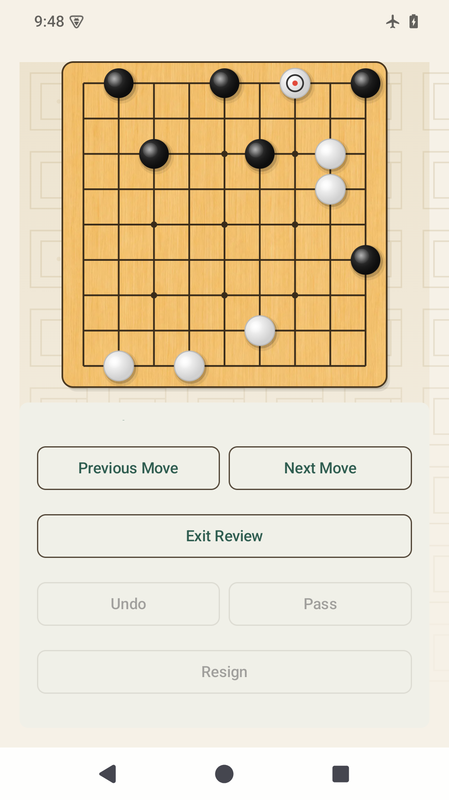

How to replay a Go game on Android
Which reply surprised you? After a game of Go, it helps to stop just before that move and look at the board again. Here’s how to do that with a game you played in GoPad on a Samsung Galaxy phone or tablet.
Shown in GoPad 0.2.4 · English · Local two-player game
Finish the game and agree on the score
When you and your opponent are finished, each player taps Pass on their turn. Two consecutive passes open Scoring Preview.
Tap stones to mark or unmark dead stones. If you disagree about a group, choose Resume Play. When you agree on the board and score, tap Confirm Result.

Save the game and open the replay
On the result screen, tap Review This Game. GoPad saves the game and opens its record at move zero. The empty board lets you follow the game from Black’s first stone.
If you’re putting the phone away, choose Save Game. Use Review Last to return to the most recently saved game later.

Step back one move and predict the reply
Tap Next Move to replay one move. When you reach a reply that surprised you, tap Previous Move once. Take a moment to choose where you expected your opponent to play. Then tap Next Move to compare.
Try it with the board pictured here. White’s 12th move is the marked stone on the top edge. Look at the position just before it: would you have answered on that edge or played elsewhere? With a partner, each give one reason for your choice.
Tap Exit Review when you’re done.
